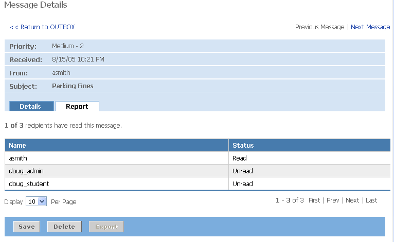

Notifications Portlet
Looking for more help options? Click Here

Viewing Notifications
To view notifications:
- By default, the most recent notifications will be displayed in the initial notifications view. Click on the More or Inbox link to access your inbox and view all notifications.
- To access the detailed content of a notification, click the subject link.
- In the details view, you will see the priority, date received, sender, subject, notification message and links to any attachments.
- To delete the notification, click the Delete button.
- To save the notification in your notification save folder, click the Save button.
- Click Return to INBOX to return to the inbox list view.
- To filter your inbox message list by read notifications only, click the Display Read link. To return to the list of all messages, click Display All.
- To navigate through a long list of messages, use the Next and Prev links.
To delete notifications:
- Place a checkmark next to each notification you wish to delete.
- Click the Delete button.
- Verify that your selection appears in the left navigation pane under the Items You Have Selected to Delete heading.
- Click the Yes radio button to confirm the deletion of these messages.
- Click the Submit button.
The notifications you selected will no longer appear.
Saving Notifications
To save notifications:
- Place a checkmark next to each notification you wish to save.
- Click the Save button.
- Your messages will be moved to the save folder. Saved message will remain in the saved folder until deleted by you or by a system administrator.
The notifications you selected will no longer appear in your Inbox.
Notification Outbox
Your notification Outbox allows you to view sent notifications, delete sent notifications and view reports on which individuals have read the notification.
To view sent notifications:
- Click the Outbox tab within the Notification portlet.
- Click the message subject to view the details of the messages and report on recipient read/unread status.
- Click Report to view a list of recipients and the read/unread status for each recipient.

Deleting Sent Notifications
To delete notifications from your outbox:
- Place a checkmark next to each notification you wish to delete.
- Click the Delete button.
- Verify that your selection(s) appear in the left navigation pane under the Messages You Have Selected to Delete heading.
- Click the Yes radio button to confirm the deletion of these messages.
- Click the Submit button.
The message will be removed from your outbox
|
|
Deleting a message from your outbox does not remove it from recipient inboxes or lists of saved messages. Administrators do have the ability to perform this function - via the System Messages tools within the portlet. |
Individuals granted authoring privileges can compose and send Notifications directly from the notification channel.
Click Compose Notifications to begin.
Step 1: Adding RecipientsClick the Add Recipients button.
The Selection Basket used for adding recipients contains three sections:
- Search - Search for a specific member to add.
- My Selections - Details the number of members/groups currently in the Selection Basket.
- Members / Groups Listings - All members/groups available to be added to the Selection Basket.
You may add members and groups to your Selection Basket in one of two ways: you may search for specific members or groups, or browse through the directory of Campus Groups, your own Personal Groups, or individual Members.
To search for a specific member or group:
- Enter a whole or partial member or group name of the in the Search field.
- Click the Go button.
- From the list of search results, place a checkmark next to each member/group that you wish to add.
- Click the Add to My Selection Basket button.
Once you click the Add to My Selection Basket button, the number in the My Selections section in the left navigation pane will increase by the number you added. Also, the groups/members that you added will now appear grayed out in the Members/Groups Listings section.
To browse through the listings of Campus Groups or your own Personal Groups:
- Click the Groups link.
- Choose Campus or Personal Groups.
- Find the group you wish to add.
- Place a checkmark next to the group name.
- Click the Add to My Selection Basket button.
Complete Selections:
- When all desired groups and members have been selected, click the Submit My Selections button.

Step 2: Author Message
To begin composing your notification:
- Enter the subject of the notification
- To add attachments to the notification, click the Add Attachments link
- Click the Browse button to find the file.
- Click the Upload Now button.
- Enter the body of the message. A HTML WYSIWYG editor is included which allows you to include additional formatting in the message.
- Click the Spell Check link to spell check the content of the message field
- Assign a priority.
- If the notification should also be distributed via email, check the Also Send Copy by Email option.

Step 3: Preview and Send
To preview the message, prior to sending click the Preview Message tab at the top of the message. From the preview view, you can return to the edit message view to make additional changes or send.
- Click the Send button to distribute the message.
Select individuals or administrators may be granted permissions to import a batch of notifications into the system. This feature allows information and alerts from other campus systems to be distributed via the notification portlet.
To import notifications:
- Click the Import button.
- Click the Browse button to find the file which contains the notifications to be imported.
- Click the Import Now button.
Import Format
The format for imported messages is as follows:
<message>
<recipient type="To">
<id>GROUP ID</id>
<label>GROUP LABEL</label>
<entity-type>group</entity-type>
</recipient>
<subject>SUBJECT TEXT</subject>
<body>
<![CDATA[ Body of the notification message]]>
</body>
<expires />
<priority>#</priority>
</message>
Managing System Notifications
Select system users will have access to manage system messages. These administrative users will have the ability to view any message in the system, regardless of author. The ability to delete and/or export any message is also provided.
To delete messages from the system:
- Click the System Messages tab within the Notification Portlet.
- Locate the message(s) to be deleted. Messages are sorted by Received Date by default. To page through additional messages, use the Prev and Next links at the bottom of the channel.
- To view the contents of a message prior to deleting, click the message subject.
- Click the checkbox associated with all messages to be deleted.
- Click the Delete button.
- You will be presented with a list of the selected messages and asked to confirm the deletion. Click the Yes radio button.
- Click Submit to complete the delete process.
| Deleting a message from the System Message view will remove the message from the INBOX of all recipients, as well as the SAVE folders of any users who have previously read and saved the notification. |
To Export a Notification:
- Click the checkbox next to the desired message(s) from the Outbox, Inbox or System Messages view.
- Click the Export button.
- You will be prompted to download the export file.
The export file is formatted in XML and contains the original message, as well as information on the read/unread status for each of the recipients.